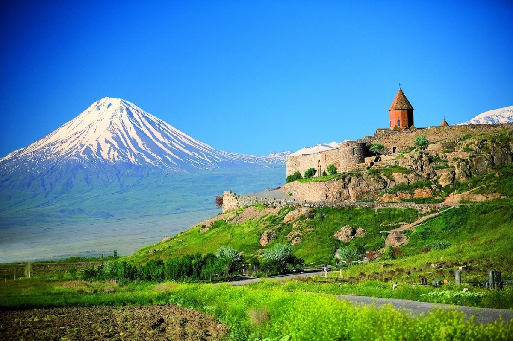
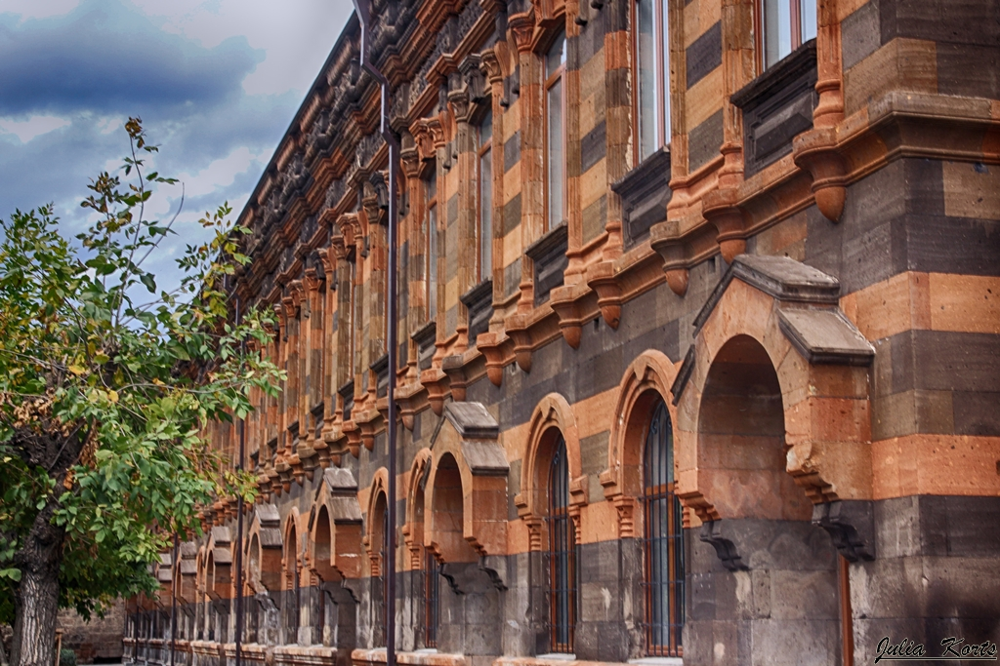
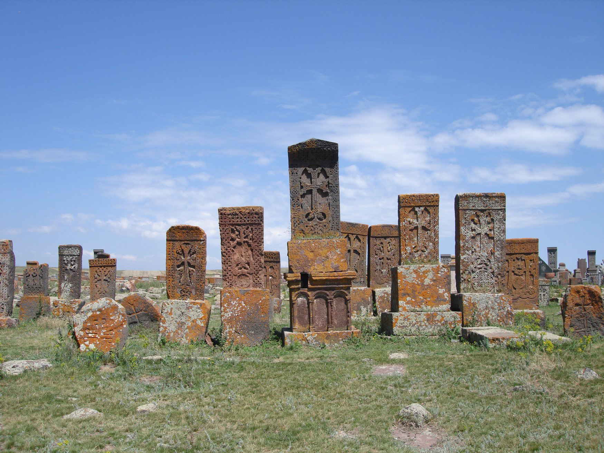
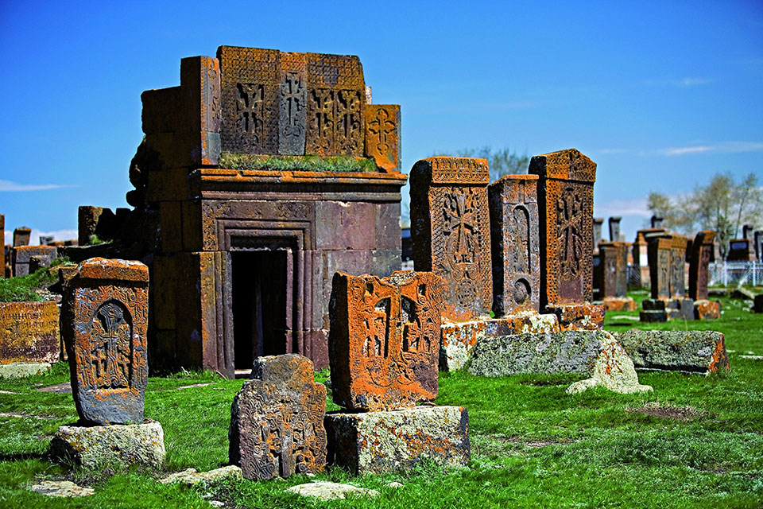
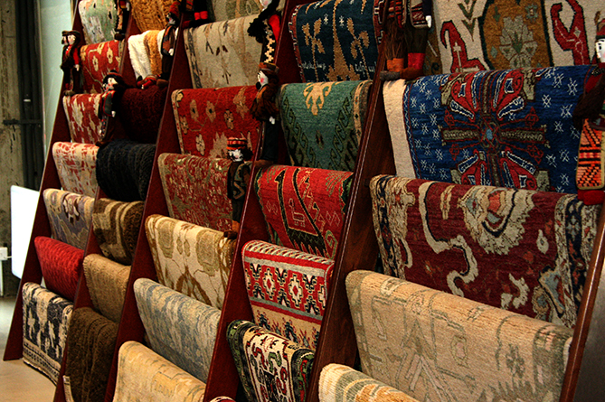
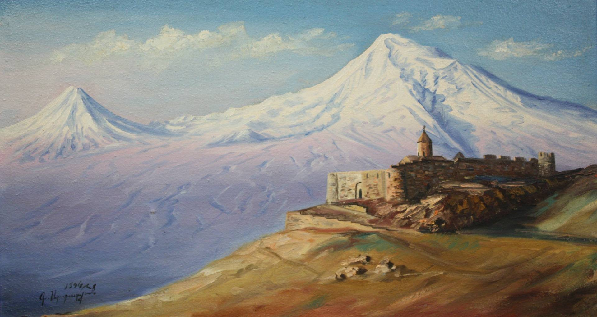
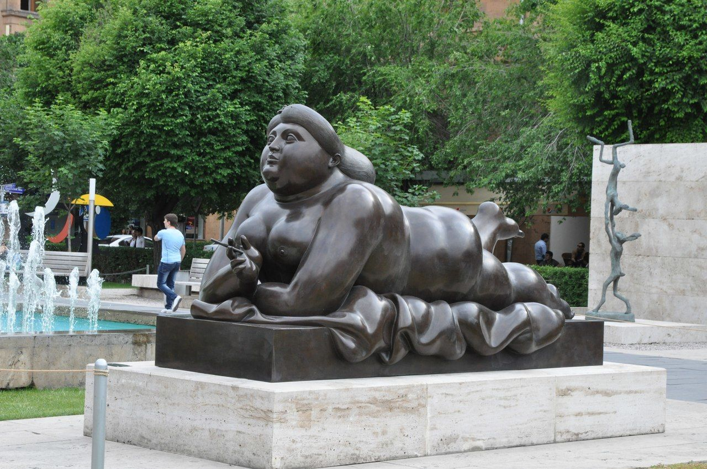
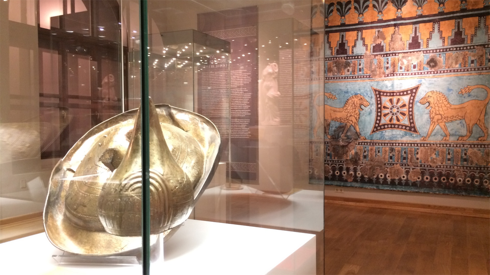

Культура Армении
Самобытность и уникальность Армении стоит на трех столпах – это неповторимое очарование ее горной природы, древнейшее христианское наследие, которое Армения переняла одна из первых и ее оригинальная национальная культура. Это – главное богатство Армении, которое она сумела выстоять за всю свою драматическую историю.
Армения, расположенная на скрещении путей между Востоком и Западом, была постоянным местом столкновений между великими империями древности и средневековья. Рим, Иран, Византия, арабы, сельджуки, монголы проходили через Армению, надолго, иногда на столетия, прерывая ее культурное развитие, покрывая землю дымящимися развалинами. Сумев противостоять каждому из мощных пришельцев, народ сохранил верность своей культуре, но она не могла не претерпеть изменений, поэтому культура Армении таким удивительным образом впитала черты восточных и западных цивилизаций.
Материальная и духовная культура Армении сложилась на основе богатых культур древнейших обитателей Армянского нагорья, всех тех этнических элементов, которые участвовали в образовании армянского народа. Естественно, что здесь велика роль выдающейся урартской культуры. До 301 года культура Армении развивалась под двумя влияниями, западным (эллинизм) и восточным (Парфия). Однако эти влияния только дополняли и обогащали национальную культуру. Христианство - один из могучих источников мировой культуры создало новые формы в архитектуре, изобразительном искусстве, музыке. Важной вехой в развитии культуры народа стало создание в 405 году Месропом Маштоцем армянского алфавита и национальной письменности.
Архитектура
Архитектура Армении «Айастан - карастан» - так по-армянски называют эту землю - «Армения - страна камня».
Горный ландшафт страны определил черты ее архитектуры. Мощно и монументально, как и окружающие их горы, высятся по всей Армении памятники средневекового зодчества. Каменистая почва, зубцы окружающих хребтов и очертания архитектурных памятников сливаются в единый образ.
Традиционная архитектура Армении – это храмовая архитектура церквей, монастырей, обителей и пр. Раннесредневековое зодчество ( V-VI века) представлено, в основном, базиликами. Базилика – это строение вытянутой прямоугольной формы, разделённое, как правило, на три части рядами колонн, при этом центральная часть возвышается над другими. В конце VI-VII веках получила своё развитие крестово-купольная и центрально-купольная композиции храмовой архитектуры. Симметричный крестообразный фасад храма украшен боковыми сводами и увенчан огромным куполом, видным из дальних уголков храма. Позднее храмовый облик менялся, простые и строгие церковные сооружения становятся более нарядными и сложными. Совершенствовались формы, прибавлялись новые элементы, к примеру, купольный барабан. Но в целом, традиционные храмовые постройки имеют общие основные черты.
Особый вид храмовой армянской архитектуры - монастырский ансамбль. Он слагался из целого ряда элементов - собора, часовен, колокольни, гражданских построек - трапезной, библиотеки, ризницы и других. Комплекс часто окружался стеной, к которой примыкали жилые и хозяйственные помещения. Над главными воротами иногда воздвигали небольшую церковь. Возникновение первых монастырей исследователи относят к VII веку, расцвет их строительства приходился на XII век.
По земле Армении разбросано также немало феодальных замков – крепостей, дворцов, замков, караван-сараев, мостов. Недаром Армению величают «музеем под открытым небом». Всемирно известны величественный памятник эллинизма – Храм солнца - Гарни ( III - II в.в. до н.э.), купольные храмы Эчмиадзина ( IV в.), храм Звартноц ( VII в.), средневековая жемчужина Гегард ( IV - XIII в.в.).
Хачкары
Хачкары В каждой культуре есть некий самобытный элемент, который, не присутствуя больше нигде, невольно становится символом всей национальной культуры. В Армении таким символом являются «хачкары» - так называемые крест-камни – памятники Армении не встречаемые больше ни в одной стране мира. Слово «хачкар» образовано двумя армянскими корнями: «хач» - крест и «кар» - камень.
Хачкары представляют особый вид искусства – декоративно-архитектурные скульптуры, основанные на древних национальных традициях и отличающееся разнообразием и богатством форм. Хачкары стали резать в начале IV века, сразу после того, как Армения приняла христианство. Вместо языческих жертвенников и в тех местах, где в дальнейшем должны были быть воздвигнуты церкви и монастыри, устанавливали деревянные кресты. Но дерево недолговечно, и поэтому их стали заменять каменными, а с IX века - изображениями крестов на каменных прямоугольных плитах. Тогда же хачкары стали устанавливать по самым разным поводам: в честь победы над врагами, по случаю окончания строительства храма или моста, в благодарность за получение земельного надела. Они служили межевыми знаками и очень часто - могильными памятниками.
Хачкары Центральный символ любого хачкара - процветший, как бы распустившийся, подобно дереву или цветку, крест - символ новой, вечной жизни. Под крестом высекают круг: круг с водруженным на нем крестом символизирует торжество христианской веры. Над крестом обычно изображают общие для всех христианских конфессий символы четырех евангелистов - орла, льва, быка и ангела. Но у армян это и четыре начала мироздания - огонь, вода, земля и воздух.
Мастеров-камнерезов, создающих хачкары называют варпетами. И их искусство живо и востребовано по сей день. В хачкарах присутствует дух армянского народа, все богословие Армянской апостольской церкви.
Самое большое в Армении кладбище с древними хачкарами находится у поселка Норадуз. В хачкарах норадузского кладбища запечатлено целое тысячелетие армянской истории - самые древние из камней датируются VIII веком.
Прикладное искусство
Ковроткачество, Прикладное искусство Армении Традиционными бытовыми занятиями армян были и есть ткачество и ковроткачество, гончарство, кружевоплетение, ювелирная техника, создания и украшения домашней утвари. Развиваясь, эти народные промыслы переросли в национальное декоративно-прикладное искусство, наиболее распространённое и доступное широкой публике.
В керамике, коврах, вышивке, украшениях из серебра, в простых каждодневных вещах воплощалась основа основ народного миросозерцания. Они объединяли и олицетворяли все искусство Армении. Здесь можно было черпать идеи форм, зрительное богатство, цветовое разнообразие, увидеть новые варианты привычного. Ковроткачество, Прикладное искусство Армении.
Древнейшей ветвью армянского прикладного искусства является мастерствозолотого и серебряного дела, связанное с художественной обработкой этихблагородных металлов, которые жители Армянского нагорья уже использовали во IIтысячелетие до н. э.
Искусство литья, резьбы на золоте и серебре, чеканки, инкрустаций камнями, их шлифовки и обрамления — выразилось в многочисленных предметах украшения, культа и быта армян. Ковры, пожалуй, один из самых необходимых в быту армян предметов. Коврами устилали столы, покрывали сундуки, сиденья и постели. Ковры часто служили завесами дверных проёмов и алтарей в храмах. Ковроделие относят к числу древнейших ремёсел, освоенных армянами.
Живопись, скульптура
Художник Первые образцы национальной живописи мы можем увидеть на архитектурных памятниках Эчмиадзина, в античном Гарни и других храмах, в том числе и относящихся к эпохе Урарту. Стены и полы в культовых сооружениях были покрыты удивительными орнаментами, барельефами и рельефами, значительная часть которых сохранилась до наших дней. Они изображали разнообразные растения и животных, сюжеты, связанные с христианской религией – сцены Страшного Суда и Рождества, жизнью знати, занятиями народа.
Живопись, с присущими ей эмоциональными выразительными средствами, превращала стены храмов во внушительную образную повесть. Параллельно с нею начинала развиваться иконопись.
Особый вид церковной живописи занимает миниатюра – яркие колоритные рисунки религиозного содержания, иллюстрирующие рукописные книги. Первые прекрасные образцы миниатюры появились уже в VI веке, но наивысшего расцвета искусство достигло в эпоху Средневековья. В XVII - XVIII веках распространяется стенная роспись, появляется новый вид искусства – станковая живопись. В XIX веке ведущими жанрами армянского искусства были портретная живопись, жанровая и историческая, пейзажная живопись.
Великим художником-маринистом, творчество которого принадлежит мировой культуре, но прежде культурам двух народов - русского и армянского, был Иван (Ованес) Айвазовский.
Литература
Почти сразу же после изобретения алфавита и письменности на свет начинают появляться первые литературные памятники на армянском языке. Они относятся к V - VI в.в. Прежде всего, это исторические произведения Мовсеса Хоренаци. Его « История Армении» содержит сведения о странах Передней Азии. Хоренаци сберег в своих трудах драгоценные образцы устной народной поэзии. Он упоминает о песнях и легендах, распеваемых в народе в его время. Другой не менее известный раннесредневековый автор – Корюн, описавший « Жития Маштоца» , а также совершивший ряд переводов на армянский язык богословских книг.
Высокого уровня достигла армянская поэзия. Широко известным имена поэтов Григора Нарекаци ( X в.), создавшего поэму «Книга скорбных песнопений» - один из монументальных памятников в истории мировой литературы, Нерсеса Шнорали ( X в.), Фрика ( XIII в.). Великое рукописное наследие армянского народа – более 15 тысяч рукописей по истории, философии, праву, медицине, математике, естествознанию, астрономии, музыке хранятся в фондах одного из крупнейших мировых центров хранения рукописной культуры – Матендаране им. Месропа Маштоца. Первая армянская книга была напечатана в XV веке. В XIX в. литература Армении развивалась под влиянием русской и западноевропейской культуры.
Театр

Театральное искусство на территории Армении развивается еще со времен до нашей эры. Оно было привнесено сюда родоначальниками этого вида искусства – древними греками - в эпоху эллинизма, когда территорию Армянского нагорья занимала Великая Армения со столицей – Тигранакертом. Известно, что армянский царь Тигран II Великий в I в. до н.э. построил в своей столице амфитеатр (сохранились развалины), где приглашенные им греческие артисты ставили греческие трагедии и комедии.
По свидетельству Плутарха, армянский царь Артавазд II сочинял трагедии, которые ставились в Арташате – второй столице Армении ( I в. н.э.). И хотя история профессионального армянского театра насчитывает более двух тысячелетий, подлинное возрождение армянского театрального искусства относится ко второй половине XIX века.
В Ереване в 1921 был открыт Театр им. Г.Сундукяна – крупнейший в Армении драматический театр. На его сцене ставятся произведения как западных классиков, так и известных армянских драматургов. В 1933 был открыт Ереванский театр оперы и балета.
Музеи
Музеи Армении В Ереване находятся Государственный исторический музей, Музей истории города Еревана, Государственная картинная галерея, Музей современного искусства, Институт древних рукописей Матенадаран им. Месропа Маштоца и ряд других музеев, в Сардарабаде – Музей этнографии и фольклора, в Эчмиадзине – Музей религиозного искусства.
Музыка
Армянскую музыку никогда не спутаешь ни с какой другой. У нее особая мелодика и богатое звучание. В целом, эта самобытность достигается за счет звучания оригинальных армянских инструментов, сохранившихся еще со времен раннего Средневековья - прототипы скрипки – пандир и бамбир; струнные - тавих, кнар; духовые – свирель, зурн, авагпог; ударные - барабан.
От древнейших времен идут народные песнопения – обрядовые, трудовые, военные и т.п.
Народ создал множество песен – любовных, свадебных, колыбельных, песен-плачей и причитаний. А исполнителями песен являлись народные певцы – гусаны. Начиная с V века, развивается церковная песня и музыка. Хоровые песни назывались шараканами. Они исполнялись во время церковных обрядов и торжеств. Армянская культура - музыка c XII века в музыке стали применять хазы – древнеармянские ноты. Городская народная песня и инструментальная музыка развиваются, вбирая в себя черты крестьянской песни, элементы восточной и западной культур. Дошедшие до нас отрывки эмоциональных любовно-лирических, бытовых и застольных песен выгодно свидетельствуют об уровне развития армянской средневековой музыкальной культуры. С конца XVII века развивается искусство армянских ашугов, посвящённое, в основном, любовно-лирическим и бытовым темам.
В 1868 г. Чухаджяном была написана первая армянская опера «Аршак II», а произведения А.Спендиарова закладывают основу национальной классической симфонической музыки; А.Тиграняном на основе музыкального языка в 1912 г. создается опера «Ануш».
Начало XIX века вызывает подъём армянской музыкальной жизни, создаётся новая армянская нотопись.
XX век подарил миру целую плеяду выдающихся армянских композиторов - Арама Хачатуряна, Микаэла Таривердиева и Арно Бабаджаняна.